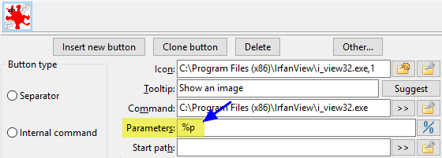

变量将帮助我们在配置工具栏按钮或设置文件关联操作和热键操作时。
我们基本上会在需要根据当前选定的文件、我们所在的目录以及与我们在面板中显示的内容相关的其他事项提供参数时使用它们。
这里是一个简单的例子。配置了一个按钮以使用变量 %p 启动 IrfanView 的人具有该参数。

当用户点击该按钮时，它将启动 IrfanView，并将变量%p替换为活动面板中当前选定的文件。
这就是本页面中变量的全部内容。
正如您所看到的，它们大多数以百分号 % 开头。
注意：变量和后缀区分大小写！
这些是可能使用的基本变量，并且与当前选择相关。
默认情况下，所有结果值都是带引号的。如果您需要不带引号的值，请参阅 结果中的引号与否。
对于每一个示例，假设我们指向文件 C:\Users\UserName\Desktop\comment.png。
| 基本变量 | |
|---|---|
| 变量 | 它代表什么 |
%p |
完整文件名，路径 + 文件名Example: %p = "C:\Users\UserName\Desktop\comment.png" |
%f |
仅文件名，包括扩展名示例：%f = "comment.png" |
%d |
仅路径，不包括尾部目录分隔符Example: %d = "C:\Users\UserName\Desktop" |
%z |
路径中最后一个目录的名称示例：%z = "桌面" |
%o |
仅文件名，不带扩展名示例：%o = "评论" |
%e |
仅扩展名，不带句点示例：%e = "png" |
%v |
相对文件名引用当前活动目录 这在您调用内部命令 cm_FlatView 时是相关的。 If we've done a flat view from directory "C:\Users\UserName", the %v will result in "Desktop\comment.png" |
如果选择了多个文件，这些变量将返回所有选定文件的值，且在一行中显示。要在任何情况下仅获取光标下文件的值，我们可以使用编号后缀 0。
根据上述提到的变量字母，我们可以在前一个字母的基础上再添加一个字母，以增加我们想要使用的精确度。
对于每一个，假设给出了示例：
在左侧面板中，我们指向文件 "C:\LeftFolder\File.lft"
在右侧面板中，我们指向 "C:\RightFolder\File.rgh"
当前活动面板是右侧的。
| 基本后缀 | |
|---|---|
| 后缀 | 它代表什么 |
s |
源面板或活动面板（无论是左侧还是右侧）Example: %ps = "C:\RightFolder\File.rgh" |
t |
目标或非活动面板（无论是左侧还是右侧）Example: %pt = "C:\LeftFolder\File.lft" |
l |
左侧面板Example: %pl = "C:\LeftFolder\File.lft" |
r |
右侧面板Example: %pr = "C:\RightFolder\File.rgh" |
|
p |
两个面板，先激活第一个，然后留一个空格，再激活第二个Example: %pp = "C:\RightFolder\File.rgh" "C:\LeftFolder\File.lft" |
b |
两个面板，先左边的，然后留一个空格，再是右边的Example: %pb = "C:\LeftFolder\File.lft" "C:\RightFolder\File.rgh" |
如果我们当前选择了多个文件，我们可以在之前提到的文件后添加一个后缀，以明确我们想使用哪个。
对于表中的每个元素，我们假设源面板指向“C:\temp\”，并且我们选择了二十六个文件，名称类似于“FileA.txt”、“FileB.txt”等，直到“FileZ.txt”。
| 编号后缀 | |
|---|---|
| 后缀 | 它代表什么 |
0 |
光标下的文件Example: %ps0 = "C:\temp\FileY.txt" |
1 |
第一个选定的文件Example: %ps1 = "C:\temp\FileA.txt" |
2 |
第二个选定的文件Example: %ps2 = "C:\temp\FileB.txt" |
3 |
第三个选定的文件Example: %ps3 = "C:\temp\FileC.txt" |
21 |
第二十一选定文件Example: %ps21 = "C:\temp\FileU.txt" |
有时当我们向可执行文件传递参数时，需要在文件名之前包含一些内容。
有时我们想在文件名之前和之后添加一些内容。
请注意，以下内容将适用于每个单独选择的项目。
对于表中的每个元素，我们假设当前位于 "C:\Windows\Fonts"，并选择了三个文件，分别名为 "courrier.ttf"、"fixedsys.ttf" 和 "terminal.ttf"。
| 前缀和后缀 | |
|---|---|
| 前缀和后缀 | 它代表什么 |
{} |
一组大括号将导致在每个选定项之前添加大括号之间的文本Example: %fs{+} = "+courrier.ttf" "+fixedsys.ttf" "+terminal.ttf" |
{}{} |
两组大括号将导致在每个选定项的前后分别放置大括号之间的文本。Example: %fs{[}{]} = "[courrier.ttf]" "[fixedsys.ttf]" "[terminal.ttf]" |
之前我们已经指示了与当前选定项目相关的变量。
但我们也可以使用变量 %D 来表示我们想要引用面板的目录名称。
我们可以在该变量上添加上述提到的相同后缀字母，以明确我们想要引用哪个面板。
对于每一个，假设给出了示例：
在左侧面板中，我们位于 "C:\Reference"
在右侧面板中，我们指向“E:\Work”
当前活动面板是右侧的。
| 面板路径 | |
|---|---|
| 变量 | 它代表什么 |
%D |
单独使用，不带后缀，将返回当前活动面板的路径示例：“E:\Work” |
%Ds |
当前活动或源面板的目录（无论是在左侧还是右侧）示例：“E:\Work” |
%Dt |
不活跃或目标面板的目录（无论是在左侧还是右侧）示例: "C:\Reference" |
%Dl |
左侧面板目录示例: "C:\Reference" |
%Dr |
右侧面板目录示例：“E:\Work” |
%Z |
单独使用，不带后缀，将返回当前活动面板路径的最后一个目录名称示例：“工作” |
%Zs |
当前活动面板路径的最后目录名称（无论是在左侧还是右侧）示例：“工作” |
%Zt |
非活动面板路径的最后目录名称（无论是在左侧还是右侧）示例：“参考” |
%Zl |
左侧面板路径的最后目录名称示例：“参考” |
%Zr |
右侧面板路径的最后目录名称示例：“工作” |
正如您之前所见，由于历史和遗留原因，DC 将返回引用的结果。
这在最初很有用，当文件名中有空格时，我们想将文件名作为参数传递，并希望整个过程能够正常工作。
但是随着新变量的添加，很明显我们需要一种方式来获得未加引号的结果。基本的例子通常是当我们想要连接一个源文件名，但只要没有扩展名的文件名，和一个我们自己在这一行指定的新特定扩展名。
因此，我们可以继续使用相同的变量来表示相同的含义，而不是添加新的变量来返回相同的内容但不带引号，只需在参数行上设置类似 %"0 的内容，以指示 DC 从现在起到我们正在评估的行的末尾，不要对结果进行引号处理。
基本上我们将会有：
%"0 : 从这个位置生成的文件名将不带引号%"1 : 从这个位置，生成的文件名将被引用%" : 也接受恢复默认设置，即结果被引用下表给出了一个示例，情况是我们选择了一个名为“Client List.mdb”的文件，以及各种带引号/不带引号字符串的组合结果。
| 引用的例子或不引用 | |
|---|---|
| 表达 | 结果 |
%o.zip |
"Client List".zip |
%"0%o.zip |
Client List.zip |
%"0"%o.zip" |
"Client List.zip" |
%"0"%o.zip" %"1%f |
"Client List.zip" "Client List.mdb" |
正如您之前所见，由于历史和遗留原因，当 DC 返回路径时，它将不带尾随路径分隔符。
这可以通过使用一个变量来改变，该变量将决定后面行中的路径变量是否带有尾随路径分隔符。
基本上我们有：
%/0 : 返回的路径将不包含尾部分隔符%/1 : 返回的路径将带有尾部分隔符%/ ：也被接受，默认情况下，返回的路径将不带尾部分隔符下表给出了一个例子，情况是我们选择了目录 "C:\Users\UserName\Desktop"，以及各种尾部路径变量组合的结果：
| 路径变量示例 | |
|---|---|
| 表达 | 结果 |
%D |
"C:\Users\UserName\Desktop" |
%/0%D |
"C:\Users\UserName\Desktop" |
%/1%D |
"C:\Users\UserName\Desktop\" |
%/%D |
"C:\Users\UserName\Desktop" |
某些应用程序将接受一个文件名作为参数，并假定该文件是一个包含文件名列表的文本文件。
Double Commander为我们提供了变量，这些变量将创建一个临时文本文件（在系统临时文件目录中），其中包含所有指定选定项目的列表，临时创建的文件名将被替换为该变量。
| 文件列表变量 | |
|---|---|
| 表达 | 描述 |
%L |
所选项目的文件列表的文件名，包括完整的文件名（路径 + 文件名） |
%F |
所选项目文件列表的文件名，仅包含文件名 |
%R |
所选项目的文件列表的文件名，仅包含其相对路径名 |
Double Commander将在 Windows 中使用 ANSI 系统编码，或在类 Unix 系统中使用默认系统编码（在 GNU/Linux 发行版中通常是 UTF-8）。
关闭时，Double Commander会删除所有此类临时文件。
默认情况下，上述文件列表中的文件名是未加引号的。但如果需要，您可以添加一个后缀来更改这一点。
此外，还有后缀可以指定您希望此文件列表以 UT8 或 UTF16 编码。
| 文件变量的后缀列表 | |
|---|---|
| 表达 | 描述 |
Q |
列表中的文件名将被引用 |
U |
列表将以 UTF8 格式编码 |
W |
列表将以 UTF16 格式编码 |
您还可以添加另一个后缀，以指定需要从哪个面板获取文件列表，使用之前提到的相同后缀字母。
这里是可能的示例：
| 文件变量的后缀组合 | |
|---|---|
| 表达 | 描述 |
%LQt |
完整文件名，引用自目标面板中选定的文件 |
%FUs |
仅文件名，采用 UTF8 格式，包含来自源面板的选定文件 |
%RQW |
带有相对路径的文件名，已引用，采用 UTF16 格式，源文件（默认） |
您可以在参数中指定是否希望您正在配置的命令行必须在终端中执行。
要做到这一点，您将使用%t变量。
| 在终端中执行 | |
|---|---|
| 表达 | 描述 |
%t0 |
在终端中运行并在最后请求关闭它 |
%t1 |
在终端中运行并在结束时保持打开状态 |
这里有两个变量，用于显示消息并请求动态提供参数，带有建议的默认值：
| 互动 | |
|---|---|
| 表达 | 描述 |
%[message to show] |
将显示一个消息框，内容为括号内指定的文本 |
%[message;default_val] |
将提示用户输入一个值，并提供默认值 |
互动示例：
| 互动示例 | |
|---|---|
| 表达 | 描述 |
%[Make sure ThisFile.ext is closed!] |
将在执行操作之前显示消息“Make sure ThisFile.ext is closed!” |
%[输入图像转换的宽度值;1024] |
将提示用户输入一个值，显示文本“输入图像转换的宽度值”，默认建议值为 1024，但用户可以输入其他内容。用户输入的结果将替代命令行中“%[query;default]”表达式所在的位置。 |
在最后一部分，我们展示了尚未呈现的变量。
| 杂项变量 | |
|---|---|
| 表达 | 描述 |
%% |
将仅用一个 % 符号替代 |
%# |
从这个位置，# 符号将被视为 % |
#% |
从之前提到的状态，将%视为变量前缀 |
%? |
将显示即将执行的命令行。 |
%% 的实用性在于当你需要在参数中包含 % 符号时，但又不希望它被其他内容替代，例如后面跟着一个字母，从而导致形成一个实际有效的变量。
%? 变量在您配置新工具按钮时特别有用，例如，当您想确保将使用什么作为替代参数时。
使用 %? DC 让您看到将用于启动某个东西的实际命令和参数。
更重要的是，在发布某个东西时，您甚至可能在最后一刻改变一些内容。
这在你不确定要传递给目标应用程序的参数时特别有帮助。
有时候，百分号和变量字母的组合可能会干扰系统变量。
例如，如果您输入 %os%ot，以为它会被替换为活动面板和非活动面板的文件扩展名的连接，您可能会惊讶地发现它在 Windows 下可能无法正常工作。
序列 %os% 通常会被操作系统名称替代，因为 %os% 是一个表示操作系统名称的系统变量。
所以这里的 %# 是有帮助的。
在这样的例子中，您将输入 %##os#ot。
%# 指示 DC 从现在开始，# 现在是百分号的等价符号，这样就不会干扰可能的系统变量。
这很少需要，但如果需要，你会很高兴知道它的存在！
然后，如果需要，#% 将恢复 % 为变量的实际百分号。
在这一部分没有新内容，但我们将所有支持的变量及其含义汇总成一个表格。
| 杂项变量 | |
|---|---|
| 表达 | 描述 |
%p | 完整文件名，包括路径 |
%f | 仅文件名及其扩展名 |
%d | 仅仅是路径 |
%z | 路径中的最后一个目录 |
%o | 仅文件名，不带扩展名 |
%e | 仅文件扩展名，不带点 |
%v | 相对于当前活动目录的相对文件名 |
s | 源或活动面板的后缀（示例：%ps） |
t | 目标或非活动面板的后缀（示例：%pt） |
l | 左侧面板的后缀（例如：%pl） |
r | 右侧面板的后缀（示例：%pr） |
p | 后缀用于两个面板，活动的在前，非活动的在后（例如：%pp） |
b | 后缀用于两个面板，左侧优先，右侧其次（示例：%pb） |
0 | 光标下的文件（示例：%ps0） |
1 | 第一个选择的文件（示例：%ps1） |
2 | 第二个选定的文件（如果有的话）（例如：%ps2） |
3 | 第三个选定的文件（如果有的话）（例如：%ps3） |
21 | 第二十一选择的文件（如果有的话，例如：%ps21） |
{prefix} | {}提到一次，将设置前缀以添加先前的文件名（例如：%f{+}） |
{prefix}{suffix} | {}提到两次，将设置前缀和后缀，文件名之前和之后（例如：%f{[}{]}） |
%D | 默认，活动（源）面板的路径 |
%Ds | 具体来说，主动（源）面板的路径 |
%Dt | 非活动（目标）面板的路径 |
%Dl | 左侧面板的路径，无论哪个是活动的 |
%Dr | 右侧面板的路径，无论哪个是活动的 |
%Z | 默认情况下，活动（源）面板路径的最后一个目录名称 |
%Zs | 具体来说，活动（源）面板路径的最后一个目录名称 |
%Zt | 非活动（目标）面板路径的最后一个目录名称 |
%Zl | 左侧面板路径的最后一个目录名称，无论哪个是活动的 |
%Zr | 右侧面板路径的最后一个目录名称，无论哪个是活动的 |
%"0 | 从这个地方，生成的文件名将不带引号 |
%"1 | 从这个地方，生成的文件名将被引用 |
%" | 也接受从结果文件名反引号的内容 |
%/0 | 默认情况下，返回的路径将不带尾部分隔符 |
%/1 | 返回的路径将带有尾随分隔符 |
%/ | 也接受，默认情况下，返回的路径将没有尾随分隔符 |
%L | 所选项目的文件列表的文件名，仅包含完整的文件名（路径 + 文件名） |
%F | 所选项目文件列表的文件名，仅包含文件名 |
%R | 所选项目的文件列表的文件名，仅包含其相对路径名 |
Q | 用于请求引用文件名的 %L、%F 或 %R 的后缀 |
U | 用于 %L、%F 或 %R 的后缀以请求列表的 UTF8 文件格式 |
W | 用于 %L、%F 或 %R 的后缀以请求列表的 UTF16 文件格式 |
%t0 | 在终端中运行并在最后请求关闭它 |
%t1 | 在终端中运行并在结束时保持打开状态 |
%[message to show] | 将显示一个消息框，内容为括号内指定的文本 |
%[message;default_val] | 将提示用户输入一个值，并提供建议值 |
%% | 将仅用一个 % 符号替代 |
%# | 从这个位置，# 符号将被视为 % |
#% | 从之前提到的状态，将%视为变量前缀 |
%? | 将显示即将执行的命令行 |
我们可以在Double Commander的设置中使用环境变量：在可执行文件和工具栏图标的名称中，在插件、收藏夹目录等的名称中。如果我们不想使用绝对路径，这是一种方便的指定路径的方法。
Double Commander支持系统环境变量，并提供几个自己的环境变量：
| 环境变量 | |
|---|---|
| 变量 | 描述 |
%COMMANDER_EXE% |
Double Commander可执行文件的完整名称（路径 + 文件名）（符号链接将被替换为真实文件） |
%COMMANDER_PATH% |
Double Commander可执行文件所在的目录 |
%COMMANDER_DRIVE% |
Double Commander文件夹所在的磁盘： - Windows: 驱动器字母（带冒号）； - 类 Unix 系统：挂载点。 |
%COMMANDER_INI% |
主配置文件的完整名称（路径 + 文件名）（ doublecmd.xml ） |
%COMMANDER_INI_PATH% |
Double Commander配置文件所在的目录 |
%DC_CONFIG_PATH% |
Double Commander配置文件所在的目录 |
变量名 %COMMANDER_PATH% 和 %DC_CONFIG_PATH% 不区分大小写，我们可以使用百分号 %，无论操作系统家族如何（为了向后兼容，这对跨平台应用程序很方便）。然而，在类 Unix 系统中，环境变量名是区分大小写的，通常使用大写字母书写，因此使用传统拼写可以是一个好习惯。
在 Windows 中，我们还可以使用格式为%$Name%的伪环境变量，这些变量对应于标准 Windows 系统文件夹（为了获取这些值，Double Commander 使用 Windows API 中的 SHGetSpecialFolderPath 和 SHGetKnownFolderPath 函数）。这些不是普通的环境变量，并且对子进程（从 Double Commander 启动的应用程序）不可用，但在其他方面我们可以以类似于环境变量的方式使用它们。所有这些变量都集中在路径选择助手菜单中：在文件或目录选择按钮的右侧是按钮一些选择适当路径的功能  ，请参见描述这里。
，请参见描述这里。
所有这些变量已被添加到常用文件夹列表菜单中（特殊目录子菜单）。
最初由 Rustem（dok_rust@bk.ru）创建